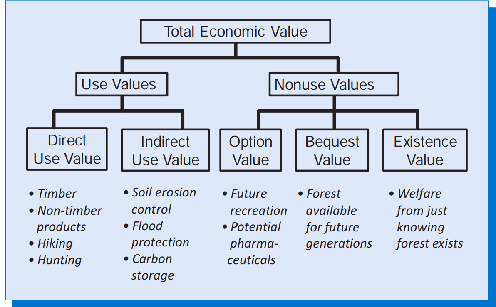

5 Glossary
A list of relevant terms. most definitions are taken from the excellent Environmental and natural resources economics by Harris and Roach (harris2017?). Other sources used are Aruga (aruga2022?)
5.1 Economic valuation
benefit/cost ratio total benefits divided by total costs.
Conjoint analysis is another method of capturing an individual’s WTP or WTA using a survey method. It is primarily used to identify which combination of factors has the largest influence on an individual’s preferences when the decision-making process is influenced by multiple factors. See (aruga2022?)
cost-effectiveness analysis economic analysis that seeks to determines the least-cost way of achieving a given policy goal.
contingent valuation (CV) an economic tool that uses surveys to question people regarding their willingness to pay for a good, such as the preservation of hiking opportunities or air quality.
cost of illness method an approach for valuing the negative impacts of pollution by estimating the cost of treating illnesses caused by the pollutant
cost-benefit analysis (CBA) a tool for policy analysis that attempts to monetize all the costs and benefits of a proposed action to determine the net benefit.
decoupling breaking the correlation between increased economic activity and similar increases in environmental impacts.
defensive expenditures approach a pollution valuation methodology based on the expenditures households take to avoid or mitigate their exposure to a pollutant.
discount rate the annual rate at which future benefits or costs are discounted relative to current benefits or costs.
discounting the concept that costs and benefits that occur in the future should be assigned less weight (discounted) relative to current costs and benefits.
empty-world and full-world economics the view that economic approaches to environmental issues should differ depending on whether the scale of the economy relative to the ecosystem is small (an empty world) or large (a full world).
endowment effect the concept that people tend to place high value on something after they already possess it, relative to its value before they possess it.
entropy a measure of the unavailable energy in a system; according to the second law of thermodynamics entropy increases in all physical processes. In relation to economics see The Entropy Law and the economic Problem by Georgescu-Rogen.
expected value (EV) the weighted average of potential values. \[EV(X)= \sum_i [P(x_i)*NB(x_i)]\] Where \(P(x_i)\) is the probability of outcome i and \(NB(x_i)\) the net benefit of event i.
habitat equivalency analysis (HEA) a method used to compensate for the damages from a natural resource injury with an equivalent amount of habitat restoration.
hedonic pricing the use of statistical analysis to explain the price of a good or service as a function of several components, such as explaining the price of a home as a function of the number of rooms, the caliber of local schools, and the surrounding air quality.
natural capital the available endowment of land and resources, including air, water, soil, forests, fisheries, minerals, and ecological life-support systems.
natural capital depreciation a deduction in national accounting for loss of natural capital, such as a reduction in the supply of timber, wildlife habitat, or mineral resources.
net benefits total benefits minus total costs.
net primary product of photosynthesis (NPP) the biomass energy directly produced by photosynthesis.
substitutability (of human-made and natural capital) the ability of one resource or input to substitute for another; in particular, the ability of human-made capital to compensate for the depletion of some types of natural capital.
payments for ecosystem services (PES) the provision of economic incentives for resource owners to maintain or enhance ecosystem services. PES may be subjects to conditions (conditionality) and the actions that are taken should improve the existing situation (additionality) without leakages.
production function approaches Such approaches assume that an environmental good or service essentially serves as a factor input in the production of a marketed good that yields utility. See (hanley2009?). See Acharya and Barbier (acharya2000?) for a valuation of groundwater rechange.
positional analysis a policy analysis tool that combines economic valuation with other considerations, such as equity, individual rights, and social priorities; it does not aim to reduce all impacts to monetary terms.
pure rate of time preference the rate of preference for obtaining benefits now as opposed to the future, independent of income level changes.
referendum format a contingent valuation question format where the valuation question is presented as a vote on a hypothetical referendum.
revealed preference methods methods of economic valuation based on market behaviors, including travel cost models, hedonic pricing, and the defensive expenditures approach.
replacement cost methods an approach to measuring environmental damages that estimates the costs necessary to restore or replace the resource, such as applying fertilizer to restore soil fertility.
present value the current value of a stream of future costs or benefits; a discount rate is used to convert future costs or benefits to present values. \[PV(X_n)= X_n/(1+r^{n})\]
safe minimum standard the principle that environmental policies on issues involving uncertainty should be set to avoid possible catastrophic consequences.
social discount rate/social rate of time preference (SRTP) a discount rate that attempts to reflect the appropriate social valuation of the future.
\[SRTP = \rho +( \varepsilon *c) \] where ρ is the pure rate of time preference, c is the annual growth rate of consumption, and \(\varepsilon\) is the elasticity of the marginal utility of consumption. The Stern review used 1.4% obtained from ρ=0.1, c=1.3% and \(\varepsilon\)=1.0. In 2001 a survey on 2,000 economist reported their opinion on SRTP finding a mean of 4.0% and median of 3.0% (weitzman2001?). In 2003, Colorado residents were asked to reveal their willingness to pay to prevent future forest loss. This information was then used to estimate time preference, the estimated value for the discount rate was less than 1% (layton?).
stated preference methods economic valuation methods based on survey responses to hypothetical scenarios, including contingent valuation and contingent ranking.
strategic bias/strategic behavior the tendency for people to state their preferences or values inaccurately in order to influence policy decisions.
total economic value the value of a resource considering both use and nonuse values.

travel cost models (TCMs) use statistical analysis to determine people’s willingness to pay to visit a natural resource such as a national park or river; a demand curve for the resource is obtained by analyzing the relationship between visitation choices and travel costs.
value of a statistical life (VSL) the willingness to pay of society to avoid one death based on valuations of changes in the risk of death.
wage-risk analysis a method used to estimate the value of a statistical life based on the required compensation needed to entice people to high-risk jobs.
5.2 Sustainability concepts
strong sustainability the view that natural and human-made capital are generally not substitutable and, therefore, natural capital levels should be maintained.
precautionary principle the view that policies should account for uncertainty by taking steps to avoid low-probability but catastrophic events.
weak sustainability the view that natural capital depletion is justified as long as it is compensated for with increases in human-made capital; assumes that human-made capital can substitute for most types of natural capital.